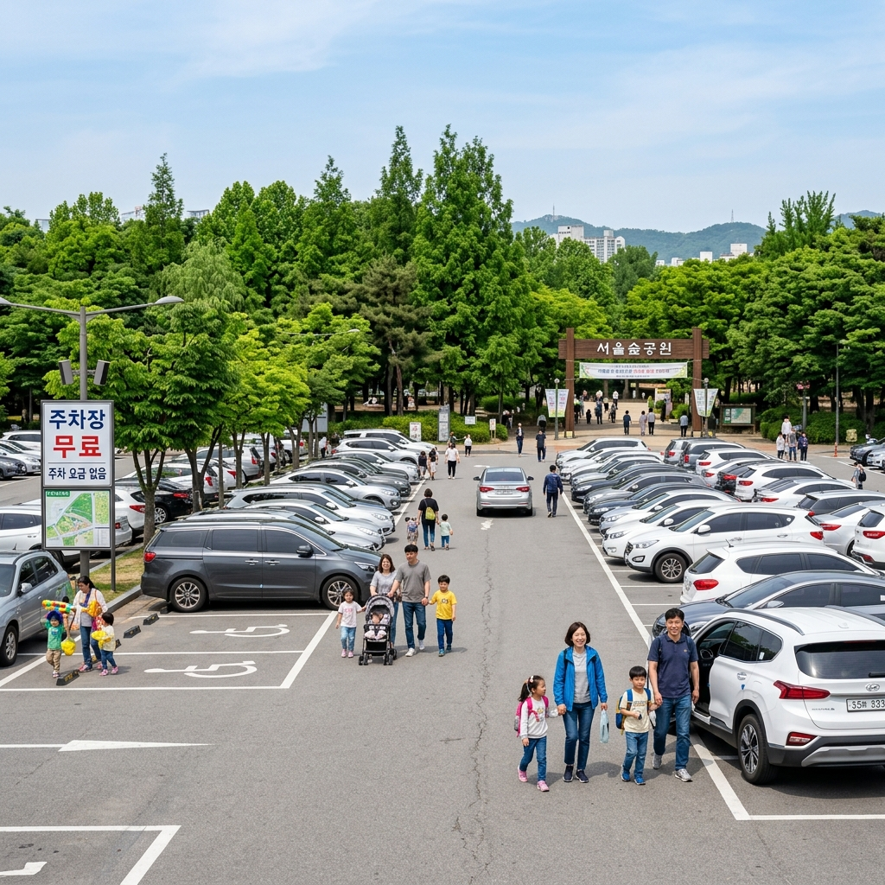
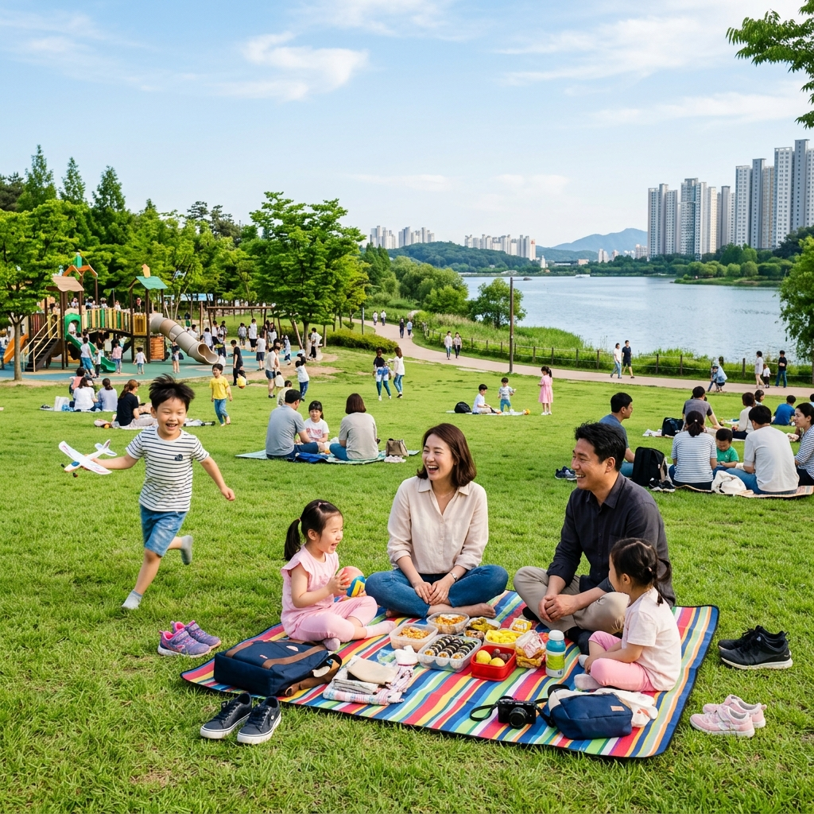
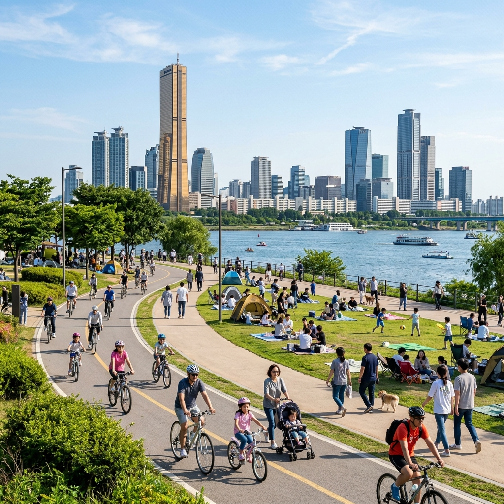

나들이 계획을 세울 때 빠뜨리기 쉬운 것이 바로 주차비입니다.
입장료는 무료인데 주차비가 생각 이상으로 나와 당황하는 경험, 한 번쯤 있으시죠?
이 글에서는 수도권에서 주차비를 아끼거나 아예 무료로 이용할 수 있는 공원과 나들이 명소를 정리해 드립니다.
단, 주차 요금 정책은 변경될 수 있으므로 방문 전 해당 공원 공식 채널에서 최신 정보를 꼭 확인하세요.
솔직히 말씀드리면, 수도권에서 입장료와 주차비가 모두 무료인 곳을 찾기가 갈수록 어려워지고 있습니다.
서울시는 공영주차장 요금을 지속적으로 인상했고, 인기 공원들도 유지 관리 재원 마련을 위해 주차 요금을 신설하거나 올리는 경우가 늘고 있습니다.
그럼에도 규모가 크거나 교통 불편 지역에 있는 일부 공원은 여전히 무료 또는 저렴한 주차를 제공합니다.
핵심은 조건을 꼼꼼히 확인하는 것입니다.
무료이지만 2시간 제한이 있는 경우, 특정 차종만 무료인 경우, 평일만 무료인 경우 등 다양합니다.
방문 전 반드시 확인하는 습관이 불필요한 지출과 스트레스를 줄여줍니다.

한강공원의 주차 요금 체계를 미리 알아두면 현명하게 이용할 수 있습니다.
여의도·뚝섬·반포처럼 시내 인기 지구는 유료 주차가 대부분이며, 성수기 주말에는 요금이 만만치 않습니다.
반면 난지·강서·암사 등 상대적으로 외곽에 위치한 지구는 요금이 낮거나 무료 시간대가 있습니다.
서울시 한강사업본부 공식 앱에서 지구별 실시간 주차 정보와 요금을 확인할 수 있습니다.
가장 간단한 방법은 따릉이를 이용하는 것입니다.
지하철역 근처 따릉이 대여소에서 빌린 뒤 한강공원까지 자전거로 이동하면 주차비 걱정이 사라집니다.
여의도·뚝섬·잠실 지구 모두 따릉이 거치대가 충분히 마련되어 있습니다.
서울 내 주요 대형 공원들의 주차 상황을 정리했습니다.
서울숲은 대중교통(지하철 2·7호선 뚝섬·성수역)이 가장 편리한 접근 방법입니다.
공원 내 주차장은 유료이며, 주말 주차 자리 확보가 어렵습니다.
월드컵공원(마포구 상암)의 경우, 주변에 비교적 저렴한 공영주차장이 있습니다.
하늘공원 쪽은 도보 이동 거리가 있으나, 공원 규모가 넓어 주차 후 산책하기 좋습니다.
북서울꿈의숲은 강북구에 위치해 강남권 대비 주차 여건이 여유롭습니다.
다만 주말 오후에는 인기가 높아 혼잡해지므로, 오전 일찍 방문하는 것이 주차와 관람 모두에 유리합니다.
서울 밖 경기도 공원들은 상대적으로 주차 여건이 나은 편입니다.
수원 광교호수공원은 일부 구역에서 일정 시간 무료 또는 저렴한 요금을 적용해 왔습니다.
호수 주변 산책로가 잘 정비되어 있고 진입로가 여럿이라 분산 주차도 가능합니다.
고양 중앙공원(일산)은 신도시 내 위치한 공원으로, 주차 요금이 저렴하거나 일정 시간 무료 운영하는 공영주차장과 인접해 있습니다.
안산 화랑유원지는 서부 수도권 주민들이 즐겨 찾는 공원으로, 입장 및 주차 모두 비교적 저렴하게 운영되어 왔습니다.
각 공원의 최신 요금 현황은 해당 시청 또는 공원 공식 홈페이지에서 확인하시기 바랍니다.

도심 외곽의 생태공원이나 수목원 중에 입장료와 주차비 모두 부담 없는 곳도 있습니다.
시흥갯골생태공원은 국가 습지보호구역으로 입장 무료입니다.
주차장도 무료지만 주말 혼잡이 심합니다.
시흥시청 주변 주차 후 마을버스로 이동하면 혼잡을 피할 수 있습니다.
광명시 도덕산 주변은 산 입구에 소규모 무료 주차 구역이 있는 경우가 있습니다.
다만 수용 대수가 적어 오전 일찍 방문하지 않으면 자리 잡기 어렵습니다.
자연환경이 중요한 생태공원일수록 주차 공간을 의도적으로 제한해 대중교통 이용을 유도하는 경우가 많다는 점을 참고하세요.
아무리 좋은 주차장도 자리가 없으면 소용없습니다.
성공률을 높이는 몇 가지 전략을 소개합니다.
오전 9시 이전 출발이 가장 확실한 방법입니다.
인기 명소의 주차장은 주말 오전 10시 이후로 빠르게 채워집니다.
내비게이션 앱 실시간 주차 정보 활용: 카카오맵, 네이버지도에서 공영주차장 잔여 면수를 실시간으로 확인할 수 있습니다.
출발 전에 확인해 두면 이동 중 당황하는 상황을 줄일 수 있습니다.
주차 앱 사전 예약: 아이파킹, 파킹박, 카카오 T 주차 등을 통해 미리 자리를 확보하면 할인 혜택도 받을 수 있습니다.
목적지 주변 이면도로 공영주차장도 찾아보세요.
관광객들이 잘 모르는 소규모 주차장이 주변에 있는 경우가 많습니다.
솔직하게 말씀드리겠습니다.
수도권 유명 명소는 대중교통으로 찾아가는 편이 대부분 훨씬 편하고 경제적입니다.
주차 자리를 찾아 30~40분을 헤매다 결국 먼 곳에 주차하고 걷는 상황이 반복된다면, 처음부터 지하철을 타는 것이 낫습니다.
특히 한강공원·경복궁·홍대·북촌 같은 서울 핵심 명소는 지하철 접근성이 탁월합니다.
어쩔 수 없이 차를 가져가야 한다면 유료 주차장을 예약해 두는 것이 훨씬 현명합니다.
주차비 몇천 원을 아끼려다 귀한 나들이 시간을 낭비하는 것은 좋은 선택이 아닙니다.

| 방법 | 절감 효과 | 적합한 상황 |
|---|---|---|
| 오전 9시 전 출발 | 무료 자리 확보 | 무료 주차장 있는 공원 |
| 지하철·버스 이용 | 주차비 0원 | 대중교통 접근 가능 명소 |
| 따릉이·킥보드 | 이동 유연성 확보 | 역에서 명소까지 1~2km |
| 주차 앱 예약 | 할인+자리 보장 | 유료 주차 예정 시 |
| 실시간 주차 앱 | 헛걸음 방지 | 출발 전 확인 |
나들이 계획을 세울 때마다 주차 정보를 확인하는 간단한 루틴을 만들어 보세요.
①목적지 결정 → ②대중교통 이용 가능 여부 확인 → ③차량 이용 시 주차장 실시간 조회 → ④필요하면 사전 예약.
이 네 단계만 습관으로 만들면 주말 나들이마다 주차 문제로 스트레스 받는 일이 크게 줄어듭니다.
가장 중요한 것은 방문 직전 공식 채널에서 현재 요금을 재확인하는 것입니다.
무료 주차라는 정보를 믿고 갔다가 유료로 바뀐 상황을 만나면 당황스럽습니다.
여유롭고 즐거운 주말 나들이를 위해 미리미리 준비하세요.